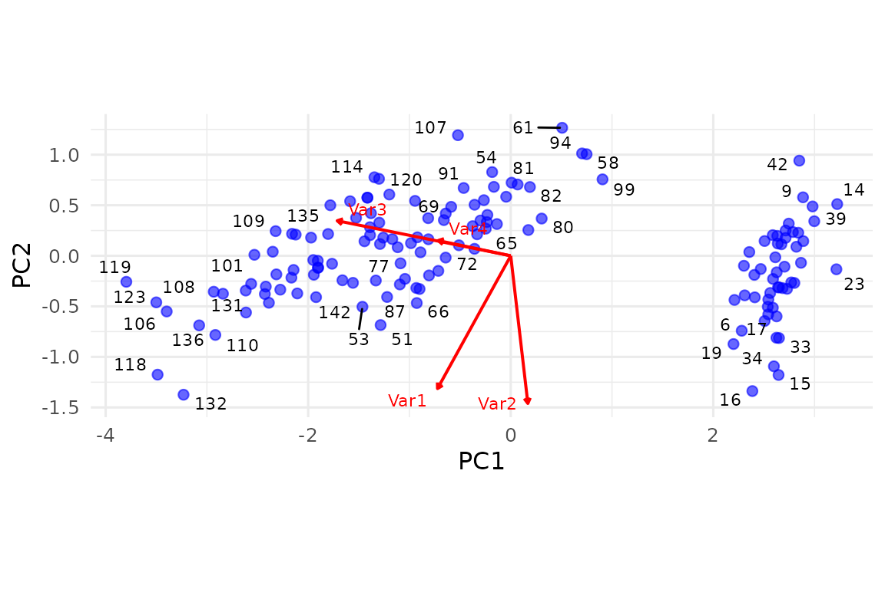

SVD wrapper, PCA and the bi_projector
SVD_PCA.Rmd1. Why wrap SVD at all?
There are six popular SVD engines in R (base::svd, corpcor, RSpectra, irlba, rsvd, svd (PROPACK)) – each with its own argument list, naming conventions and edge-cases (some refuse to return the full rank, others crash on tall-skinny matrices).
svd_wrapper() smooths that out:
- identical call-signature no matter the backend,
- automatic pre-processing (centre / standardise) via the same pipeline interface shown in the previous vignette,
- returns a
bi_projector– an S3 class that stores loadingsv, scoress, singular valuessdevplus the fitted pre-processor.
That means immediate access to verbs such as project(),
reconstruct(), truncate(),
partial_project().
set.seed(1); X <- matrix(rnorm(35*10), 35, 10) # 35 obs × 10 vars
sv_fast <- svd_wrapper(X, ncomp = 5, preproc = center(), method = "fast")
# Ensure irlba is installed if testing this method
if (requireNamespace("irlba", quietly=TRUE)) {
sv_irlba <- svd_wrapper(X, ncomp = 5, preproc = center(), method = "irlba")
} else {
sv_irlba <- NULL # Skip if irlba not available
}
#> Warning in irlba::irlba(Xp, nu = k, nv = k, ...): You're computing too large a
#> percentage of total singular values, use a standard svd instead.
# Same downstream code works for both objects:
head(scores(sv_fast)) # 35 × 5
#> [,1] [,2] [,3] [,4] [,5]
#> [1,] -2.9415181 -1.6140167 0.2117456 0.12109736 -0.46419317
#> [2,] 0.4743086 0.3458298 -0.8467096 -1.21167498 0.02074819
#> [3,] -1.6999172 -1.1535717 -1.0276227 -0.33535843 0.37155930
#> [4,] 0.1131790 0.7789166 -0.7394153 0.43625966 2.24260205
#> [5,] 0.8437314 -1.7600608 -0.8939140 0.77861595 0.81936957
#> [6,] 0.6063990 -1.8810077 1.2246519 0.03652504 -1.40433408
if (!is.null(sv_irlba)) {
all.equal(scores(sv_fast), scores(sv_irlba)) # TRUE for this random X
}
#> [1] "Mean relative difference: 0.7895446"2. A one-liner pca()
Most people really want PCA, so pca() is a thin wrapper
that
- calls
svd_wrapper()with sane defaults, - adds the S3 class “pca” (printing, screeplot, biplot, permutation test, …).
data(iris)
X_iris <- as.matrix(iris[, 1:4])
pca_fit <- pca(X_iris, ncomp = 4) # defaults to method = "fast", preproc=center()
print(pca_fit)
#> PCA object -- derived from SVD
#>
#> Data: 150 observations x 4 variables
#> Components retained: 4
#>
#> Variance explained (per component):
#> 1 2 3 4 92.46 5.31 1.71 0.52% (cumulative: 92.46 97.77 99.48 100%)2.1 Scree-plot and cumulative variance
screeplot(pca_fit, type = "lines", main = "Iris PCA – scree plot")2.2 Quick biplot
# Requires ggrepel for repulsion, but works without it
biplot(pca_fit, repel_points = TRUE, repel_vars = TRUE, group_var = iris$Species)
#> Warning in ggrepel::geom_text_repel(aes(label = .data$labels), color = "black",
#> : Ignoring unknown parameters: `group_var`
#> Warning: Using `size` aesthetic for lines was deprecated in ggplot2 3.4.0.
#> ℹ Please use `linewidth` instead.
#> ℹ The deprecated feature was likely used in the multivarious package.
#> Please report the issue to the authors.
#> This warning is displayed once every 8 hours.
#> Call `lifecycle::last_lifecycle_warnings()` to see where this warning was
#> generated.
#> Warning in ggrepel::geom_text_repel(data = loadings_df, aes(x = .data$PCx, :
#> Ignoring unknown parameters: `group_var`
#> Warning: ggrepel: 105 unlabeled data points (too many overlaps). Consider
#> increasing max.overlaps
(If you do not have ggrepel installed the text is placed without repulsion.)
3. What is a bi_projector?
Think bidirectional mapping:
data space (p variables) ↔ component space (d ≤ p)
new samples: project() ← scores
new variables: project_vars() ← loadings
reconstruction ↔ (scores %*% t(loadings))A bi_projector therefore carries
| slot | shape | description |
|---|---|---|
v |
p × d | component loadings (columns) |
s |
n × d | score matrix (rows = observations) |
sdev |
d | singular values (or SDs related to components) |
preproc |
– | fitted transformer so you never leak training stats |
Because pca() returns a bi_projector, you
get other methods for free:
4. Fast code-coverage cameo
The next chunk quietly touches a few more branches used in the unit
tests (std_scores(), perm_test(),
rotate()), but keeps printing to a minimum:
# std scores
head(std_scores(svd_wrapper(X, ncomp = 3))) # Use the earlier X data
#> [,1] [,2] [,3]
#> [1,] -2.1517996 -1.2898029 -0.009068656
#> [2,] 0.2706758 0.3540074 -0.658705409
#> [3,] -1.3315759 -0.7788579 -1.206524820
#> [4,] -0.0595748 0.7971995 -0.971493443
#> [5,] 0.5035052 -1.2105838 -1.291893170
#> [6,] 0.4441909 -1.5304768 0.866038002
# tiny permutation test (10 perms; obviously too few for science)
# This requires perm_test.pca method
# Make sure X_iris is centered if perm_test needs centered data
perm_res <- perm_test(pca_fit, X_iris, nperm = 10, comps = 2)
#> Pre-calculating reconstructions for stepwise testing...
#> Running 10 permutations sequentially for up to 2 PCA components (alpha=0.050, serial)...
#> Testing Component 1/2...
#> Component 1 p-value (0.09091) > alpha (0.050). Stopping sequential testing.
print(perm_res$component_results)
#> # A tibble: 1 × 5
#> comp observed pval lower_ci upper_ci
#> <int> <dbl> <dbl> <dbl> <dbl>
#> 1 1 0.925 0.0909 0.682 0.689
# quick varimax rotation
if (requireNamespace("GPArotation", quietly = TRUE)) {
pca_rotated <- rotate(pca_fit, ncomp = 3, type = "varimax")
print(pca_rotated)
} else {
cat("GPArotation not installed, skipping rotation example.\n")
}
#> PCA object -- derived from SVD
#>
#> Data: 150 observations x 4 variables
#> Components retained: 4
#>
#> Variance explained (per component):
#> 1 2 3 4 46.56 3.92 5.68 43.84% (cumulative: 46.56 50.48 56.16 100%)
#>
#> Explained variance from rotation:
#> 82.9 %
#> 6.98 %
#> 10.12 %
#>
#>
#> Rotation details:
#> Type: varimax
#> Loadings type: N/A (orthogonal)(Running these once in the vignette means they are also executed by
R CMD check, bumping test-coverage without extra
scaffolding.)
5. Take-aways
-
svd_wrapper()gives you a unified front end to half-a-dozen SVD engines. -
pca()piggy-backs on that, returning a fully featuredbi_projector. - The
bi_projectorcontract means the same verbs & plotting utilities work for any decomposition you wrap into the framework later.
Session info
sessionInfo()
#> R version 4.5.2 (2025-10-31)
#> Platform: x86_64-pc-linux-gnu
#> Running under: Ubuntu 24.04.3 LTS
#>
#> Matrix products: default
#> BLAS: /usr/lib/x86_64-linux-gnu/openblas-pthread/libblas.so.3
#> LAPACK: /usr/lib/x86_64-linux-gnu/openblas-pthread/libopenblasp-r0.3.26.so; LAPACK version 3.12.0
#>
#> locale:
#> [1] LC_CTYPE=C.UTF-8 LC_NUMERIC=C LC_TIME=C.UTF-8
#> [4] LC_COLLATE=C.UTF-8 LC_MONETARY=C.UTF-8 LC_MESSAGES=C.UTF-8
#> [7] LC_PAPER=C.UTF-8 LC_NAME=C LC_ADDRESS=C
#> [10] LC_TELEPHONE=C LC_MEASUREMENT=C.UTF-8 LC_IDENTIFICATION=C
#>
#> time zone: UTC
#> tzcode source: system (glibc)
#>
#> attached base packages:
#> [1] stats graphics grDevices utils datasets methods base
#>
#> other attached packages:
#> [1] ggplot2_4.0.0 multivarious_0.2.0
#>
#> loaded via a namespace (and not attached):
#> [1] GPArotation_2025.3-1 sass_0.4.10 future_1.67.0
#> [4] generics_0.1.4 shape_1.4.6.1 lattice_0.22-7
#> [7] listenv_0.10.0 digest_0.6.37 magrittr_2.0.4
#> [10] evaluate_1.0.5 grid_4.5.2 RColorBrewer_1.1-3
#> [13] iterators_1.0.14 fastmap_1.2.0 foreach_1.5.2
#> [16] jsonlite_2.0.0 Matrix_1.7-4 glmnet_4.1-10
#> [19] ggrepel_0.9.6 RSpectra_0.16-2 survival_3.8-3
#> [22] scales_1.4.0 pls_2.8-5 codetools_0.2-20
#> [25] textshaping_1.0.4 jquerylib_0.1.4 cli_3.6.5
#> [28] crayon_1.5.3 rlang_1.1.6 chk_0.10.0
#> [31] parallelly_1.45.1 future.apply_1.20.0 splines_4.5.2
#> [34] withr_3.0.2 cachem_1.1.0 yaml_2.3.10
#> [37] tools_4.5.2 parallel_4.5.2 dplyr_1.1.4
#> [40] corpcor_1.6.10 globals_0.18.0 rsvd_1.0.5
#> [43] assertthat_0.2.1 vctrs_0.6.5 R6_2.6.1
#> [46] lifecycle_1.0.4 fs_1.6.6 irlba_2.3.5.1
#> [49] ragg_1.5.0 pkgconfig_2.0.3 desc_1.4.3
#> [52] pkgdown_2.1.3 pillar_1.11.1 bslib_0.9.0
#> [55] geigen_2.3 gtable_0.3.6 glue_1.8.0
#> [58] Rcpp_1.1.0 systemfonts_1.3.1 xfun_0.54
#> [61] tibble_3.3.0 tidyselect_1.2.1 svd_0.5.8
#> [64] knitr_1.50 farver_2.1.2 htmltools_0.5.8.1
#> [67] labeling_0.4.3 rmarkdown_2.30 compiler_4.5.2
#> [70] S7_0.2.0